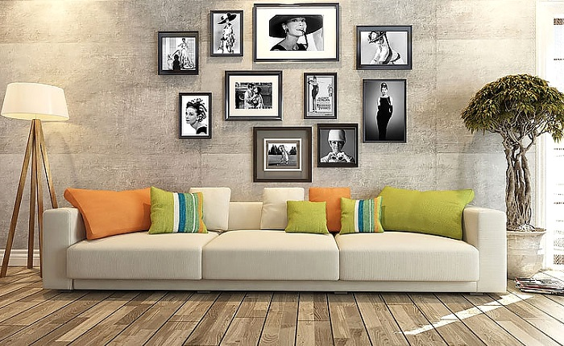

Онлайн-магазин картин «Картинушка»
Украшать интерьер с помощью картин всегда было одним из лучших способов создать индивидуальное пространство, обладающее своим неповторимым настроением и уютом.
Вы планируете ремонт или уже сделали его, но чего-то не хватает? Какого-то настроения, главного ощущения от обстановки, ее изюминки: оно создается картинами. Украшать интерьер с помощью изображений всегда было одним из лучших способов создать индивидуальное пространство, обладающее своим неповторимым настроением и уютом.
Не нужно думать, что купить картины для интерьера — это очень дорого. Сегодня позволить их себе без проблем может каждый человек. Можно выбрать самые разные виды изображений: живые полотна, репродукции, фотографии, графику... Осталось только правильно выбрать картину, которая подходит к дизайну комнаты и создает подходящее настроение.
Правила для размещения картины в интерьере
Чтобы красиво развесить изображения, учитывайте геометрию пространства. Картины способны подчеркнуть одни особенности комнаты и сгладить другие. Например, длинные вертикальные изображения сделают любое помещение визуально выше, а несколько картин, равномерно распределенные по горизонтали зрительно расширят комнату.
А вот если поместить большую картину на стену в квартире, где ей едва хватает места, то это способно зрительно уменьшить помещение. Лучше использовать вокруг полотна достаточно свободного пространства.
Если помещение большое, то маленькие картины создадут иллюзию пустоты и потерянности. Их можно развесить группами, тогда они будут восприниматься более органичного. Среднего размера полотно можно скорректировать с помощью просторного паспарту.
Любые картины можно развесить своими руками, но следите за горизонталями: чтобы поддерживать чувство зрительной гармонии, несколько изображений на одной стене следует выравнивать по горизонтали. Общепринятым является выравнивание картин по центру.
Следующая задача — выбор высоты. Можно разместить изображения в соответствии с «музейным методом»: когда расстояние средней линии от пола фиксировано и составляет 152 см. Но если любоваться полотнами люди будут сидя, то лучше повесить их пониже. Это актуально, если речь идет о кухне или спальне.
Чем больше пустого пространства на стене, тем большего размера изображение там можно поместить. Картины в гостиную над диваном должны быть среднего размера, лишь на пустующих стенах можно позволить себе развернуться, повесив там огромные полотна, гобелены или картины на всю стену. Картины в интерьере гостиной на фото позволят хорошо разобраться с тем, как лучше вешать их, чтобы было гармонично.
- Товор
- Товар
- Тавор
- Тавар